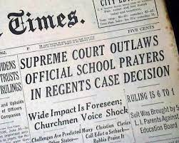

The year is 1962 and The New York Board of Regents has just authorized a short, voluntary prayer for recitation at the start of each day. The prayer was optional and students could opt out if they desired to. Five parents of students at Herricks High School, one of the schools which implemented the prayer, made the decesion to sue the school board president William J. Vitale and challenge the constitutionality of the Regents Prayer.
The Prayer: "Almighty God, we acknowledge our dependence upon Thee, and we beg Thy blessings upon us, our parents, our teachers, and our country."
The New York Court of Appeals rejected the parents' argument, which was based on claim that prayer violated the Establishment Clause of the First Amendment.
* Establishment Cause : Congress shall make no law respecting an establishment of religion, or prohibiting the free exercise thereof; or abridging the freedom of speech, or of the press; or the right of the people peaceably to assemble, and to petition the Government for a redress of grievances. *
After losing at the state level against the State of New York, the case was taken to the Supreme Court in April of 1962 by one of the parents, Steven Engel.

| Majority | Concurrence | Dissent |
| Black | Douglas | Stewart |
| Warren | ||
| Douglas | ||
| Clark | ||
| Harlan | ||
| Brennan |
The case of Engel v. Vitale, which ruled in favor of Engel and the parents who were against the in-school prayer, set a significant precedent for cases from then on. The ruling established that no matter if a school-wide prayer is voluntary, it does in fact violate the Establishment Clause of the First Amendment. It struck down prayers in public schools. Additionally, this case helped further limit the aspect of religion in schools as well as helped further the separation of church and state.